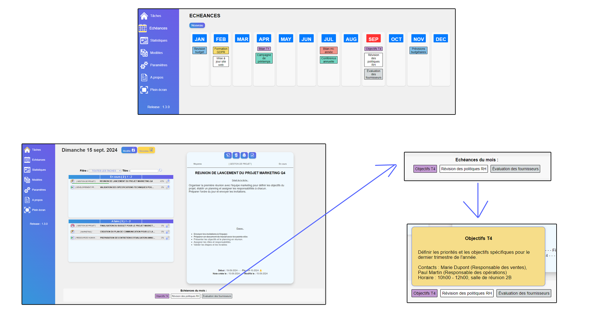

Actualité
Nouveauté : LES ECHEANCES
Ne ratez plus aucun événement important grâce à notre nouvelle fonctionnalité d'échéances annuelles. Visualisez et suivez les événements clés tout au long de l'année, directement depuis votre application !

Historiques des mises à jour :
1.3.2
Correction
- Toujours afficher la zone des échéances du mois dans l'accueil.
Amelioration
- Possibilité de créer une échéances en cliquant dans les zones du mois.
1.3.1
Correction
- Correction erreur de texte mineure
Amelioration
- Amélioration de l'interface des timelines et du responsive
1.3.0
Evolution
- Mise en place d'un système d'échéances annuel
Amelioration
- Gestion plus poussée de l'export des données
1.2.3
Amelioration
- Ajout de la possibilité de choisir le mode des notifications.
- Amelioration de l'interface de nofitication.
1.2.2
Correctifs
- Correction du bug ou l'affichage des minutes n'était pas au bon format dans le dashboard.
- Correction du bug ou les espaces n'étaient pas pris en compte dans le detail du texte lors de l'impression.
1.2.1
Correctifs
- Correction du bug ou l'icône 'info' n'apparaissait pas lors de la création d'un modèle.
- Correction du bug ou il n'y avait aucune notification pour la suppression et le renommage d'un modèle.
Amélioration
-
Le pourcentage de progression est visible de manière numéraire.
1.2.0
Correctifs
- Correction du bug où les recherches ne fonctionnait pas lorsqu'un filtre était en cours
Améliorations :
- Appui sur "Entrée" pendant la recherche actualise la page.
- Notification pour les titres en doublon.
- Implémentation du système "userMessage" commun à toute l'application.
- Mise en place d'une file d'attente pour les users messages
- Le popup de changement de priorité se positionne sur le bouton
Évolutions :
- Introduction du consentement utilisateur
- Introduction du système de notification.
- Introduction de la clôture de session
1.1.1
Correctifs :
- Correction du bug où toutes les recherches apparaissaient dans la catégorie "En cours".
- Correction du bug où les espaces étaient remplacés par des tirets.
- Correction du bug où le nombre de tâches dans le tableau de bord était influencé par la recherche en cours.
- Correction du bug où les titres longs dépasser du popup
- Correction du bug où les titres longs faisaient dépasser les dates dans la visionneuse de tâches.
1.1.0
Améliorations :
- Suppression des accents dans les titres pour faciliter la recherche ultérieure.
- Déplacement des boutons de création de tâches.
- Ajout des contacts dans le menu d'information.
Évolutions :
- Mise en place du système de recherche.
1.0.0
Migration vers le nouveau site pour la version publiée.
Correctifs :
- Correction du bug où les étapes modifiées non sauvegardées étaient conservées.
Améliorations :
- Ajout d'une icône de renommage pour les templates.
- Traduction des textes du menu en français.
- Amélioration des étapes dans l'éditeur de notes.
Évolutions :
- Possibilité de renommer un template.
- Tableau de bord : ajout de la statistique de la "tâche la plus longue".
- Tableau de bord : ajout des top 3.
- Tableau de bord : refonte du design.
0.9.9 pre-launch 2
Évolutions :
- Mise en place du déplacement haut-bas des étapes.
0.9.9 pre-launch
Évolutions :
- Intégration des icônes et style visuel.
- Gestion des templates.
0.9.9
Correctifs :
- Correction du bug où les heures totales lors de la clôture n'étaient pas réinitialisées.
Évolutions :
- Implémentation des templates (cachés).
- Passage de la base en V2 pour création du store de templates.
- Ajout de 3 niveaux de tri des tâches (priorité, tag et titre).
0.9.8
Évolutions :
- Implémentation de l'action rapide "Clôture de tâche".
- Implémentation de la visualisation de l'évolution des étapes (progress bar).
0.9.7
Ajout des icônes du menu principal lorsque sélectionnées.
0.9.6
Mise en place de l'icône de l'application.
0.9.5
Correctifs :
- Résolution du bug où le script info n'était pas chargé.
- Retrait de l'iframe pour les informations car problème d'alerte partage cookies.
- Modification du système de sélection automatique de la date de début ou de fin selon.
- Notification de l'événement de sauvegarde des changements de statut et de priorité dans les paramètres.
Optimisations :
- Optimisation du code pour éviter les traitements inutiles (affichage des notes déjà en cours d'affichage, action rapide : modification des priorités pour la même priorité).
Évolutions :
- Lors de la clôture d'une tâche, l'utilisateur peut modifier les dates de début et de fin.
0.9.4
Tests divers sur l'intégration des informations.
0.9.3
Correctifs :
- Rajout de l'icône priorité C dans les paramètres qui avait été oubliée.
- Les modifications dans les paramètres sont directement prises en compte, il n'est donc plus nécessaire de recharger l'application.
- Résolution du bug où les dates de début et de fin n'étaient pas indexées dans la base de données (l'erreur : dateStartUS. Solution : dateStart).
Optimisations :
- Optimisation du système de changement de menu.
Évolutions :
- Le menu des paramètres est scrollable lorsque l'écran est petit.
- Mise en place du menu info pour avoir les informations du site actualisées.
0.9.2
Évolutions :
- Amélioration du style visuel des changements rapides.
0.9.1
Optimisations :
- Modification du système de liste de notes pour l'évolution du changement de statut et de priorité.
Évolutions :
- Introduction des boutons d'actions rapides fonctionnels (reste à faire : le design).
0.9.0
Correctifs :
- Correction du bug où le filtre de tag ne fonctionnait plus suite à la mise à jour 0.8.9 (Ajout de .systemStatus dans le TagFilterSystem.js).
Évolutions :
- Mise en place de la personnalisation des priorités et des statuts dans les paramètres.
0.8.9
Optimisations :
- Modification de tout le système de traitement des statuts pour de futures évolutions.
Évolutions :
- Mise en place d'une version bêta de suppression de la base de données.
0.8.8
Correctifs :
- Limitation du nombre d'étapes par tâche à 10.
Optimisations :
- Modification de tout le système de traitement des priorités pour de futures évolutions.
Évolutions :
- Ajout de l'indexation par priorité.
- Les notes sont maintenant classées par priorité.
0.8.7
Correctifs :
- Modification du système de notification qui retirait le mode plein écran.
Évolutions :
- Agrandissement du bouton de navigation gauche-droite dans les listes de tâches.
0.8.6
Optimisations :
- Mise en place responsive tablette 10 pouces.
Évolutions :
- Modification de l'emplacement des items dans l'éditeur d'étape.
- Modification du design des paramètres.
- Ajout de la date dans l'export des données.
0.8.5
Évolutions :
- Mise en place d'un bouton "fullscreen".
0.8.4
Correctifs :
- Correction du bug où les options cochées par l'utilisateur n'étaient pas prises en compte lors de la reconnexion.
- Correction du bug pour la gestion des ID pour les étapes : retrait de "currentNbreEditorStep--".
- Modification du système de traitement des étapes.
- Correction du format pour "if".
- Modification du système de booléen pour les cookies de sécurité.
Optimisations :
- Mise en place d'une fonction unique pour la gestion de l'affichage.
- Résolution du bug de style inconnu.
Évolutions :
- Implémentation du tri alphabétique pour la liste de filtres de tags excluant le tag générique qui sera toujours en premier.
- Refonte intégrale du design.
- Barre de défilement pour les étapes et les détails.
0.8.3
Optimisations :
- Sortie de fonction propre (if else if else) pour la création, modification ou note terminée.
- Mise en place d'une limite de caractères pour le champ "Détail".
Évolutions :
- Verrouillage des valeurs de temps passé sur une tâche pour les heures et les minutes (nombre de caractères et valeur maximale).
- Mise en place du traitement des données sensibles.
- Réglages : système de paramétrage des données sensibles.
0.8.2
Évolutions :
- Mise en place du système d'import et export des données fonctionnel.
0.8.1
Correctifs :
- Correction du bug où la date de création changeait à chaque modification.
- Correction du bug sur le filtre de tag qui ne se réinitialisait pas à "toutes les tâches" lors des tâches "Terminer".
Optimisations :
- Variabilisation du TAG par défaut.
- Modification du système de date.
- Modification du système de formatage et de détection des erreurs dans la création/modification des notes.
Évolutions :
- Mise en place du système de traitement des dates non remplies. (voir info)
- Ajout de la date de modification de la note.
- Mise en place du système de note "TERMINER". Enregistrement dans le tableau de bord et suppression de la tâche.
0.8.0
Évolutions :
- Empêche l'utilisateur de créer une nouvelle étape s'il en existe déjà une vide.
0.7.9
Correctifs :
- Retrait du format "form" qui empêchait la création des étapes.
- Retrait du système d'auto-suppression des notes "Terminer".
- Les index dateStart et dateEnd fonctionnent.
Évolutions :
- Détection des champs obligatoires vides.
- La date de fin ne peut être antérieure à la date de début.
- Possibilité d'exporter le store (tâches) via le tableau de bord.
0.7.8
Évolutions :
- Mise en place de l'affichage de la pagination des tâches dans la navigation.
- Les tags s'affichent désormais en italique.
- Mise en place d'un système d'autocomplétion pour les tags.
0.7.7
Optimisations :
- Remplacement du système de visibilité des boutons de navigation "Next/Previous" pour les notes par un concept amélioré (display => visibility).
Évolutions :
- Mise en place d'un système de notification.
0.7.6
Correctifs :
- Les TAG des items "Terminé" n'apparaissent plus dans le filtre.
Optimisations :
- Passage en mode dynamique pour les statuts et priorités des tâches.
Évolutions :
- Mise en place d'une navigation principale.
- Changement du système de validation des étapes : Mise en place d'un système "barré".
0.7.5
Correctifs :
- Modification des icônes de suppression des étapes.
- Modification de l'emplacement des boutons "Next" et "Previous".
Évolutions :
- Ajout des infobulles.
- Possibilité de filtrer par TAG.
0.7.4
Correctifs :
- Amélioration du système de saut de ligne dans les détails.
- Résolution du problème d'impression des checkboxes d'étapes.
Évolutions :
- Aucune limite pour les étapes.
0.7.3
Évolutions :
- La touche "Entrée" dans la zone de détail ajoute une nouvelle ligne.
0.7.2
Évolutions :
- Remplacement de l'icône "Valider" par une icône "Save".
- Ajout d'une confirmation lors de la suppression.
0.7.1
Évolutions :
- Remplacement des checkboxes dans la visionneuse par des images.
0.7.0
Évolutions :
- Système d'impression fonctionnel.
0.6.0
Optimisations de code :
- Désactivation des divs par un système d'array.
Évolutions :
- Modifications visuelles.
- Possibilité d'impression en version bêta.
- Ajout d'un bouton retour "Chariot" pour le "détail".
- Affichage de 6 notes par liste.
- Ajout du statut "Terminé archive".
- Ajout d'un background pour le bouton de note avec image de priorité.
- Corrections des positions dans la liste des boutons.
- Mise en place des icônes.
- Correction de la date du jour en majuscules.
0.5.2
Optimisations de code :
- Modification du système de formatage.
Évolutions :
- Champ TAG vide renommé en "DIVERS".
- Modification visuelle du bouton de navigation des notes.
- Ajout du numéro de version.
0.5.1
Optimisations de code :
Évolutions :
- Élargissement de la visualisation et de l'édition des notes.
- Augmentation de la limite de caractères pour les étapes à 80.
- Ajout de l'étape 6.
- Limite du tag à 20 caractères.
- Optimisation de l'espace de l'éditeur de note.
- Affichage du "détail" en texte justifié.
0.5.0
Version fonctionnelle